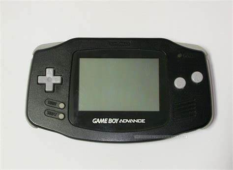
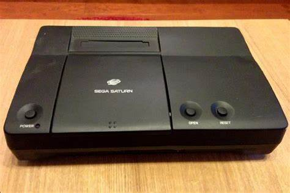
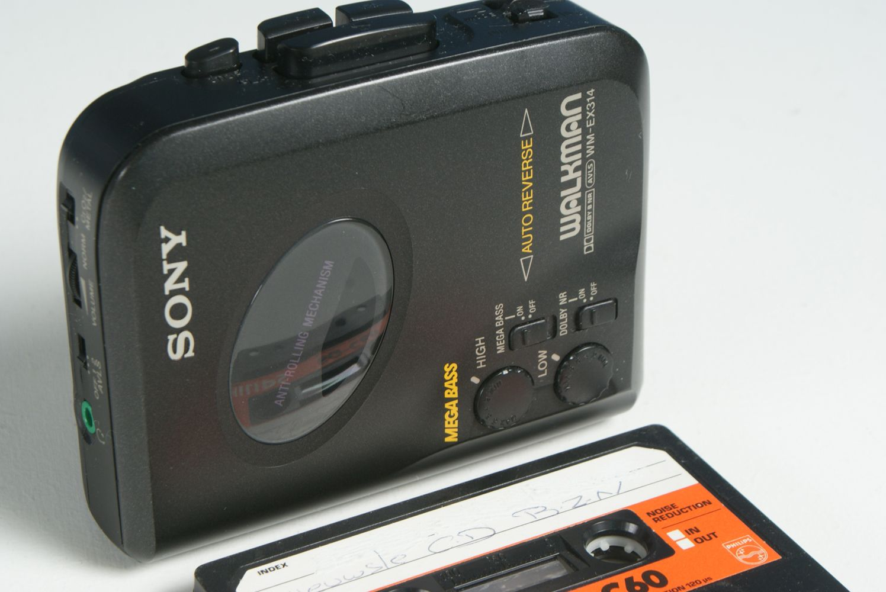
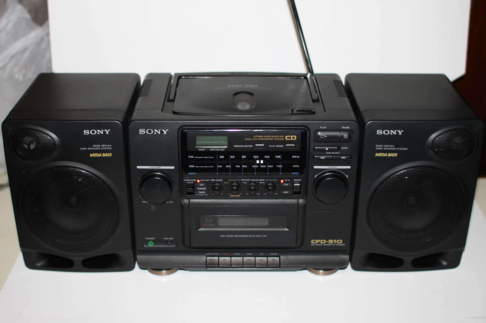

Callix Electronics
Home
Professional
Personal
All Products
Support
New product announcements:

New product announcements:

New product announcements:

New product announcements:

this is filler
 Callix Electronics
Callix Electronics